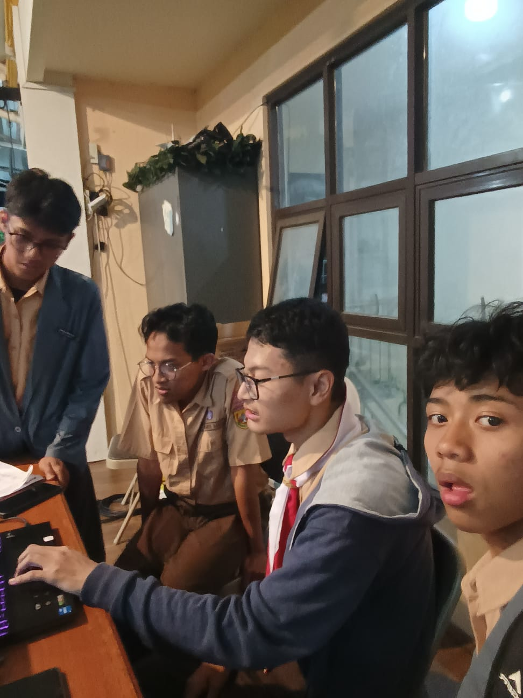

Tujuan Proker

Membangun Wadah Informasi Digital
Tujuannya adalah untuk membuat website OSIS SMAIT Fithrah Insani bisa menjadi wadah informasi yang menyalurkan informasi dari OSIS yang nantinya bisa dibaca oleh warga SMA IT Fithrah Insani.
Teknis Pelaksanaan
Pelaksanaan Fleksibel
Program kerja ini dilaksanakan secara fleksibel dengan penyesuaian terhadap kebutuhan sekolah dan jadwal kegiatan OSIS.
Kolaborasi Tim
Dilaksanakan oleh tim khusus dari OSIS dengan pembagian tugas yang jelas untuk memastikan konten selalu diperbarui.
Dokumentasi

Proses Pembuatan Website

Update Konten
Proses update konten informasi digital di SiteStream.
Kolaborasi Tim
Kerja sama tim OSIS dalam pengembangan website sekolah.